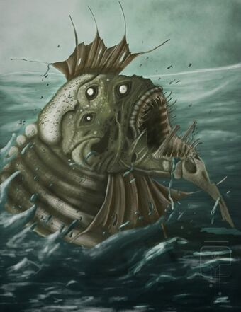

Древние легенды, что записаны в свитках Иларнека и высечены на колоннах Кадатерона, рассказывают о злом роке, покаравшем славный город Сарнат. Когда-то на его месте, возле большого озера, высился другой город, выстроенный из серого камня и называвшийся Иб. Его населяли уродливые существа с рыхлыми, как у медуз, зеленоватыми телами, выпуклыми глазами, толстыми отвислыми губами и ушами самой необычной формы. Поговаривали, будто в одну из ночей они спустились с Луны на окутанную густым туманом землю Мнар и заселили этот каменный город. Они разжигали по ночам костры, приносили жертвы и в немом молчании устраивали жуткие пляски вокруг идола, вырезанного из камня цвета морской волны, напоминавшего своими очертаниями Бокруга - огромную водяную ящерицу с чешуйчатой кажей, сверкающими глазами на тонкоголубой морде, мощными перепончатыми лапами и длинным хваостом.
Затем на землю Мнар пришли люди и в неистовой злобе уничтожили Иб со всеми его обитателями, сбросив их тела вместе с обломками камней в озеро. Они оставили лишь идола Бокруга, чтобы установить его как трофей в своём храме и похваляться победой над поверженным богом. Но в ту же ночь идол исчез, а мёртвый жрец храма начертал кровью на его камнях знак Рока. И прошло много веков, прежде чем Сарнат, обретший величественность и в упоении позабывший о мрачном пророчестве, наконей настиг злой Рок мстительного Бокруга. Единственное, что осталось на месте погибшего города людей, это каменный идол огромной водяной ящерицы, который был перенесён в Иларнек и окружён почестями, призванными умилостивить покоящегося в туманном озере Бокруга и избавить людей Мнара от его страшного гнева.
Впервые упоминается в рассказе Г.Ф. Лавкрафта "Рок, покаривший Сарнат"(The Doom That Came to Sarnath, 1919), а затем фигурирует в рассказе Брайана Ламли "Под торфяниками"(Beneath the Moors, 1974).
